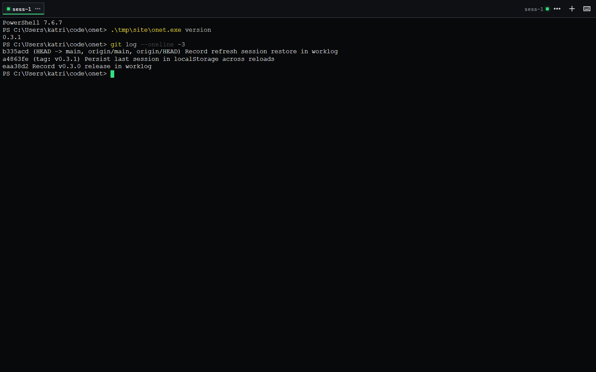
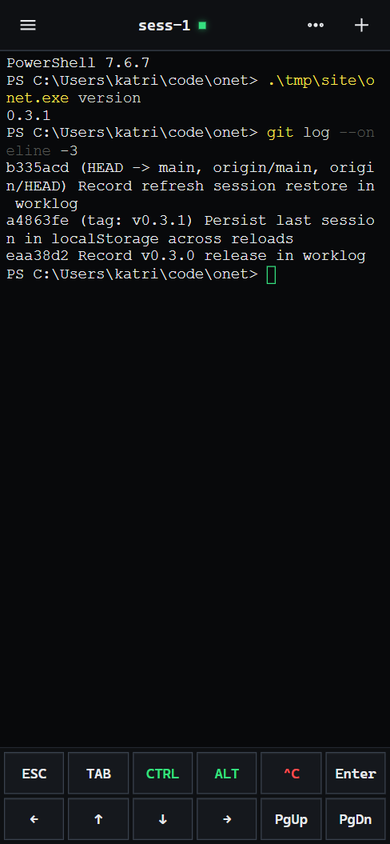

Detach without dying
Closing the tab, losing the network, or reloading is a detach. The shell keeps running; reattach replays the ring buffer and resumes live output.
A MULTIPLEXED WEB TERMINAL
Your shell, in any browser.
tmux-style sessions for the web: detach and reattach, multiple clients on one PTY, mobile-first input. One static Go binary, zero runtime dependencies.
LINUX / MACOS / FREEBSD
curl -fsSL https://katriyda.github.io/onet/install.sh | shWINDOWS
irm https://raw.githubusercontent.com/katriyda/onet/main/docs/site/install.ps1 | iex
The browser is not the terminal. It is a client.
Closing the tab, losing the network, or reloading is a detach. The shell keeps running; reattach replays the ring buffer and resumes live output.
Every browser attaches to the same process. Output is broadcast; any client can resize; input from all clients is forwarded.
Termux-style keys, edge-swipe sessions, long-press line selection, pinch zoom. Desktop gets tabs, context menus, and shortcuts. Layout follows the input device.
The frontend is embedded with go:embed: no Node, no database, no container. Download, run, open a port.
Upgrade from the web UI; the new process inherits PTY handles and the replay buffer. Sessions survive and the page reconnects in about a second.
Server events and browser-side errors land in one rotating JSONL stream, viewable and downloadable from the terminal menu.
Each session is a PTY process with a 64 KB ring buffer. Attach sends the replay first, then live output; disconnect is detach, not termination. Deep-link with ?s=<session>.
One binary. Pick a lane.
Linux, macOS, FreeBSD
curl -fsSL https://katriyda.github.io/onet/install.sh | shDetects OS and architecture, downloads the matching release, verifies SHA256 against checksums.txt, and atomically replaces the binary. No sudo, no rc-file edits.
| Flag | Meaning |
|---|---|
-v, --version <tag> | Install a specific release, e.g. v0.3.1 |
-d, --dir <path> | Install directory; default $HOME/.local/bin |
-h, --help | Usage |
ONET_VERSION and ONET_INSTALL_DIR do the same; flags win. Releases published without checksums.txt install with a warning instead of failing.
irm https://raw.githubusercontent.com/katriyda/onet/main/docs/site/install.ps1 | iexInstalls to %LOCALAPPDATA%\Programs\onet and appends it to the user PATH. No administrator prompt. With irm | iex, pass options via ONET_VERSION, ONET_INSTALL_DIR, or ONET_NO_PATH=1; the saved script also takes -Version, -Dir, -NoPath.
| Platform | Arch | Asset |
|---|---|---|
| Linux | amd64 | onet-linux-amd64.tar.gz |
| Linux | arm64 | onet-linux-arm64.tar.gz |
| Linux | armv7 | onet-linux-arm-armv7.tar.gz |
| macOS | amd64 | onet-darwin-amd64.tar.gz |
| macOS | arm64 | onet-darwin-arm64.tar.gz |
| FreeBSD | amd64 | onet-freebsd-amd64.tar.gz |
| Windows | amd64 | onet-windows-amd64.zip |
| Windows | arm64 | onet-windows-arm64.zip |
SHA256 sums: checksums.txt. Archives contain the binary, README, and config.example.json. No installer, no dependencies.
git clone https://github.com/katriyda/onet.git cd onet go build -o onet . ./onet
Go 1.26+. The frontend is embedded at build time; there is no npm step.
onet listens on http://127.0.0.1:7681. Before exposing it beyond loopback, set a token — see 05 // SECURITY.
Touch gets a key bar. Mouse gets tabs.

config.json is optional and lives next to the binary; -config points elsewhere.
{
"host": "127.0.0.1",
"port": 7681,
"token": "",
"shell": "",
"cwd": "",
"scrollback": 5000,
"font_size": 15,
"ui": "auto",
"extra_keys": ["ESC", "TAB", "CTRL", "ALT", "^C", "ENTER", "←", "↑", "↓", "→", "PGUP", "PGDN"],
"log_file": "onet.log",
"log_level": "info",
"log_max_size_mb": 20,
"log_max_backups": 5,
"log_terminal_io": false,
"allow_insecure": false
}| Field | Meaning |
|---|---|
ui | auto follows the input device; mobile / desktop force a layout |
token | Enables auth on /config, /logs, /update, /ws |
extra_keys | Touch key bar contents |
log_terminal_io | Logs raw PTY I/O; off by default |
allow_insecure | Permits non-loopback with an empty token; emergency use only |
This is a shell, not a dashboard.
allow_insecure: true is the explicit override and logs a warning./config, /logs, /update, and /ws. Anyone holding it has a shell on the machine.Transport is plain HTTP. Terminate TLS in Caddy or nginx, or use Tailscale Serve. POST /update additionally requires the same-origin header X-Onet-Update: 1 to block CSRF.
onet version onet update -check onet update
The CLI replaces the binary and exits; restart onet to apply it.
In the web UI: ⋯ → 检查更新 → 安装 vX 并重启. The new process inherits PTY handles and the replay buffer; pages reconnect in about a second. If the new binary fails to start, the old process keeps serving.
Version checks use the GitHub Releases API (60 requests/hour anonymous). Set GITHUB_TOKEN or GH_TOKEN to raise the limit, or HTTPS_PROXY in restricted networks.